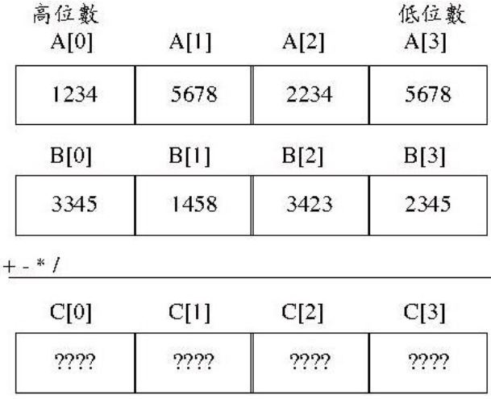

大數運算
December 3, 2021程式語言中可表達的最大整數多半受到限制，例如，Java 中 123456789123456789 就無法以 long 型態儲存，若要表示更大的整數，有些程式語言是透過程式庫，例如 Java 的 java.math.BigInteger，有些程式語言（例如 Python、Ruby、Haskell 等）直接支援大數運算，無需明確式地使用 API。
解法思路
一個型態的空間無法表示超長整數，那就使用多個空間，方式之一是使用陣列，假設程式語言的最大資料型態可以儲存至 65535的數好了，為了計算方便及符合使用十進位制的習慣，讓每個陣列元素可以儲存 0 到 9999，也就是 10000 進位。例如：

在考慮正負數的情況下，最高位數用來標示正負數，正數最高位數會是 0000，負數最高位數會是 9999，負數採 10000 補數，例如 99 為 0000 0000 0000 0099，而 -99 為9999 9999 9999 9901，也就是用 9999 減 99 表示法每個位數，最後低數位再加 1。
由於使用陣列儲存數值，數值在運算時的加減乘除等各種運算、位數的進位或借位就必須自行定義，加、減、乘都是由低位數開始運算，而除法則是由高位數開始運算。a + b 時若 b 為負數，求 b 的補數 c 並改進行a - c；a - b 時若 b 為負數，求 b 的補數 c 並改進行 a + c，乘法與除法一律先以正數表示運算，之後再判斷正負數決定是否轉為補數。
程式實作：
#include <stdio.h>
#include <stdlib.h>
#define N 8
void add(int*, int*, int*);
void subtract(int*, int*, int*);
void multiply(int*, int, int*);
void divide(int*, int, int*);
void toComp(int*, int*); // 轉補數
void absv(int*, int*); // 轉絕對值
void print(int*); // 顯示大整數
int main(void) {
int a[] = {0, 0, 0, 1234, 5678, 9910, 1923, 1124};
int b[] = {9999, 9999, 9999, 9999, 9999, 9999, 9999, 9901}; // -99
int c1[N], c2[N], c3[N], c4[N] = {0};
add(a, b, c1); print(c1);
subtract(a, b, c2); print(c2);
multiply(a, -3, c3); print(c3);
divide(a, -3, c4); print(c4);
return 0;
}
void add(int* a, int* b, int* c) {
if(b[0] == 9999) {
int comp[N] = {0};
toComp(b, comp);
subtract(a, comp, c);
} else {
int i, carry = 0;
for(i = N - 1; i >= 0; i--) {
c[i] = a[i] + b[i] + carry;
if(c[i] < 10000) {
carry = 0;
} else { // 進位
c[i] = c[i] - 10000;
carry = 1;
}
}
}
}
void subtract(int* a, int* b, int* c) {
if(b[0] == 9999) {
int comp[N] = {0};
toComp(b, comp);
add(a, comp, c);
} else {
int i, borrow = 0;
for(i = N - 1; i >= 0; i--) {
c[i] = a[i] - b[i] - borrow;
if(c[i] >= 0) {
borrow = 0;
} else { // 借位
c[i] = c[i] + 10000;
borrow = 1;
}
}
}
}
void multiply(int* a, int b, int* c) { // b 為乘數
int op1[N] = {0}; absv(a, op1);
int op2 = abs(b);
int i, tmp, carry = 0;
for(i = N - 1; i >= 0; i--) {
tmp = op1[i] * op2 + carry;
c[i] = tmp % 10000;
carry = tmp / 10000;
}
if((a[0] == 9999 && b > 0) || (a[0] == 0 && b < 0)) {
toComp(c, c);
}
}
void divide(int* a, int b, int *c) { // b 為除數
int op1[N] = {0}; absv(a, op1);
int op2 = abs(b);
int i, tmp, remain = 0;
for(i = 1; i < N; i++) {
tmp = op1[i] + remain;
c[i] = tmp / op2;
remain = (tmp % op2) * 10000;
}
if((a[0] == 9999 && b > 0) || (a[0] == 0 && b < 0)) {
toComp(c, c);
}
}
void toComp(int* src, int* comp) {
int j;
for(j = 0; j < N; j++) {
comp[j] = 9999 - src[j];
}
comp[N - 1] += 1;
}
void absv(int* src, int* op) {
if(src[0] == 9999) {
toComp(src, op);
} else {
int i;
for(i = 0; i < N; i++) {
op[i] = src[i];
}
}
}
void print(int* c) {
int v[N] = {0}; absv(c, v);
if(c[0] == 9999) {
printf("-");
}
int isDropZero = 1;
int i;
for(i = 0; i < N; i++) {
char s[5] = {'\0'};
sprintf(s, "%04d", v[i]);
if(isDropZero) {
int j;
for(j = 0; s[j] == '0' && j < 4; j++);
if(j < 4) {
isDropZero = 0;
for(; j < 4; j++) {
printf("%c", s[j]);
}
} else if(i == N - 1) {
printf("0");
}
} else {
printf(s);
}
}
printf("\n");
}
import java.util.*;
import static java.lang.System.out;
public class BigInteger {
private List<Integer> value;
public BigInteger(String val) {
// 取數字部份
String v = val.charAt(0) == '-' ? val.substring(1) : val;
// 每四個字元剖析為一個 int
value = new ArrayList<>();
for(int i = v.length() - 4; i > -4; i -= 4) {
value.add(Integer.parseInt(v.substring(i >= 0 ? i : 0, i + 4)));
}
// 補位，位數以 8 為單位
int valueLength = (value.size() / 8 + 1) * 8;
for(int i = value.size(); i < valueLength; i++) {
value.add(0);
}
// 負數轉補數表示
value = val.charAt(0) == '-' ? toComplement(value) : value;
}
private BigInteger(List<Integer> value) {
this.value = value;
}
public BigInteger add(BigInteger that) {
if(isNegative(that.value)) {
return subtract(new BigInteger(toComplement(that.value)));
}
// 對齊位數
int length = Math.max(value.size(), that.value.size());
List<Integer> op1 = copyOf(value, length);
List<Integer> op2 = copyOf(that.value, length);
List<Integer> result = new ArrayList<>();
int carry = 0;
for(int i = 0; i < length - 1; i++) {
int c = op1.get(i) + op2.get(i) + carry;
if(c < 10000) {
carry = 0;
} else {
c -= 10000;
carry = 1;
}
result.add(c);
}
if(carry == 1) { // 溢位處理
if(isPositive(op1)) { result.add(1); }
else { result.clear(); } // 負數加法運算溢位就是 0
for(int i = 0; i < 8; i++) { result.add(0); } // 自動增加 8 位數
} else { // 補位，正數補 0，負數補 9999
result.add(isPositive(op1) ? 0 : 9999);
}
return new BigInteger(result);
}
public BigInteger subtract(BigInteger that) {
if(isNegative(that.value)) {
return add(new BigInteger(toComplement(that.value)));
}
// 對齊位數
int length = Math.max(value.size(), that.value.size());
List<Integer> op1 = copyOf(value, length);
List<Integer> op2 = copyOf(that.value, length);
List<Integer> result = new ArrayList<>();
int borrow = 0;
for(int i = 0; i < length - 1; i++) {
int c = op1.get(i) - op2.get(i) - borrow;
if(c > -1) {
borrow = 0;
} else { // 借位
c += 10000;
borrow = 1;
}
result.add(c);
}
if(borrow == 1) { // 溢位處理
if(isNegative(op1)) { result.add(9998); }
else { result.clear(); } // 正數減法運算溢位就是 0
for(int i = 0; i < 8; i++) { result.add(9999); } // 自動增加 8 位數
} else { // 補位，負數補 9999，正數補 0
result.add(isNegative(op1) ? 9999 : 0);
}
return new BigInteger(result);
}
// 右運算元為 int 時的乘法運算，內部使用，兩個運算元都要是正數
private BigInteger multiply(int val, int shift) {
List<Integer> result = new ArrayList<>();
for(int i = 0; i < shift; i++) { result.add(0); } // 位移補 0
int carry = 0;
for(int i = 0; i < value.size() - 1; i++) {
int tmp = value.get(i) * val + carry;
result.add(tmp % 10000);
carry = tmp / 10000;
}
if(carry != 0) {
result.add(carry);
for(int i = 0; i < 8; i++) { result.add(0); }
} else { result.add(0); }
return new BigInteger(result);
}
public BigInteger multiply(BigInteger that) {
// 轉正數表示
BigInteger op1 = isNegative(value) ?
new BigInteger(toComplement(value)) : this;
List<Integer> op2 = isNegative(that.value) ?
toComplement(that.value) : that.value;
// 逐位運算
List<BigInteger> rs = new ArrayList<>();
for(int i = 0; i < op2.size() - 1; i++) {
rs.add(op1.multiply(op2.get(i), i));
}
// 對逐位運算結果加總
BigInteger result = rs.get(0);
for(int i = 1; i < rs.size(); i++) {
result = result.add(rs.get(i));
}
// 判斷正負數
return getLast(value) + getLast(that.value) == 9999 ?
new BigInteger(toComplement(result.value)) : result;
}
public boolean greaterOrEquals(BigInteger that) {
return isNegative(subtract(that).value) ? false : true;
}
private boolean islessOrEqualsToQuotient(BigInteger op1, BigInteger op2) {
return op1.greaterOrEquals(multiply(op2)) ? true : false;
}
// 右運算元為 int 時的除法運算，內部使用，兩個運算元都要是正數
private BigInteger divide(int that) {
List<Integer> result = new ArrayList<>();
int remain = 0;
for(int i = value.size() - 1; i > -1; i--) {
int tmp = value.get(i) + remain;
result.add(tmp / that);
remain = (tmp % that) * 10000;
}
Collections.reverse(result);
for(int i = 0; i < 8 - (result.size() % 8); i++) {
result.add(0);
}
return new BigInteger(result);
}
public BigInteger divide(BigInteger that) {
// 一律先以正數表示
BigInteger op1 = isNegative(value) ?
new BigInteger(toComplement(value)) : this;
BigInteger op2 = isNegative(that.value) ?
new BigInteger(toComplement(that.value)) : that;
BigInteger one = new BigInteger("1");
BigInteger left = new BigInteger("0");
BigInteger right = op1;
// 二分法搜尋 x.islessOrEqualsToQuotient(op1, op2) 為 true 的最大 x 值
while(right.greaterOrEquals(left)) {
BigInteger x = left.add(right).divide(2);
if(x.islessOrEqualsToQuotient(op1, op2)) {
left = x.add(one);
} else {
right = x.subtract(one);
}
}
BigInteger result = left.subtract(one);
// 判斷正負數
return getLast(value) + getLast(that.value) == 9999 ?
new BigInteger(toComplement(result.value)) : result;
}
public String toString() {
// 一律以正數表示
List<Integer> v = isNegative(value) ? toComplement(value) : value;
StringBuilder builder = new StringBuilder();
for(int i = v.size() - 1; i > -1; i--) {
builder.append(String.format("%04d", v.get(i)));
}
// 移去前端的 0，負數補負號
while(builder.length() > 0 && builder.charAt(0) == '0') {
builder.deleteCharAt(0);
}
return builder.length() == 0 ? "0" :
isNegative(value) ? builder.insert(0, '-').toString() :
builder.toString();
}
private static List<Integer> toComplement(List<Integer> v) {
List<Integer> comp = new ArrayList<>();
for(Integer i : v) { comp.add(9999 - i); }
comp.set(0, comp.get(0) + 1);
return comp;
}
private static List<Integer> copyOf(
List<Integer> original, int newLength) {
List<Integer> v = new ArrayList<>(original);
for(int i = v.size(); i < newLength; i++) {
v.add(isPositive(original) ? 0 : 9999);
}
return v;
}
private static Integer getLast(List<Integer> list) {
return list.get(list.size() - 1);
}
private static boolean isNegative(List<Integer> list) {
return getLast(list) == 9999;
}
private static boolean isPositive(List<Integer> list) {
return getLast(list) == 0;
}
private static boolean isZero(List<Integer> list) {
for(Integer i : list) if(i != 0) {
return false;
}
return true;
}
public static void main(String[] args) {
BigInteger a = new BigInteger("9999999999999999999999999999");
BigInteger b = new BigInteger("-2");
out.println(a.add(b)); // 9999999999999999999999999997
out.println(a.subtract(b)); // 10000000000000000000000000001
out.println(a.multiply(b)); // -19999999999999999999999999998
out.println(a.divide(b)); // -4999999999999999999999999999
}
}
from itertools import dropwhile
from functools import reduce
class BigInt:
def __init__(self, val):
self.value = BigInt.parse(val) if isinstance(val, str) else val
def __str__(self):
v = BigInt.toComplement(self.value) \
if BigInt.isNegative(self.value) else self.value
builder = ['%04d' % v[i] for i in range(len(v) - 1, -1, -1)]
clist = list(dropwhile(lambda c: c == '0', list(''.join(builder))))
return '0' if len(clist) == 0 else ''.join(
((['-'] + clist) if BigInt.isNegative(self.value) else clist))
def __add__(self, that):
return (self - BigInt(BigInt.toComplement(that.value))) \
if BigInt.isNegative(that.value) else self.add(that)
def add(self, that):
length = max(len(self.value), len(that.value))
op1 = BigInt.copyOf(self.value, length)
op2 = BigInt.copyOf(that.value, length)
sum = BigInt.addForEach(op1, op2, 0)
return BigInt(
(((sum[0:-1] + [1]) if BigInt.isPositive(op1) else []) + [0] * 8)
if sum[-1] == 1
else (sum[0:-1] + [0 if BigInt.isPositive(op1) else 9999])
)
def __sub__(self, that):
return (self + BigInt(BigInt.toComplement(that.value))) \
if BigInt.isNegative(that.value) else self.sub(that)
def sub(self, that):
length = max(len(self.value), len(that.value))
op1 = BigInt.copyOf(self.value, length)
op2 = BigInt.copyOf(that.value, length)
remain = BigInt.subForEach(op1, op2, 0)
return BigInt(
((remain[0:-1] + [9998] if BigInt.isNegative(op1) else [])
+ [9999] * 8) if remain[-1] == 1
else (remain[0:-1] +
[9999 if BigInt.isNegative(op1) else 0])
)
def multiply(self, val, shift):
product = [0] * shift + \
BigInt.multiplyForEach(self.value, val, 0)
return BigInt((product[0:-1] + product[-1:] + [0] * 8) \
if product[-1] != 0 else (product[0:-1] + [0]))
def __mul__(self, that):
op1 = BigInt(BigInt.toComplement(self.value)) \
if BigInt.isNegative(self.value) else self
op2 = BigInt.toComplement(that.value) \
if BigInt.isNegative(that.value) else that.value
result = reduce(BigInt.__add__,
[op1.multiply(op2[i], i)
for i in range(len(op2) - 1)], BigInt('0'))
return BigInt(BigInt.toComplement(result.value)) \
if self.value[-1] + that.value[-1] == 9999 else result
def __ge__(self, that):
return False if BigInt.isNegative((self - that).value) else True
def isLessOrEqualsQuotient(self, op1, op2):
return True if op1 >= (self * op2) else False
def __floordiv__(self, that):
op1 = BigInt(BigInt.toComplement(self.value)) \
if BigInt.isNegative(self.value) else self
op2 = BigInt(BigInt.toComplement(that.value)) \
if BigInt.isNegative(that.value) else that
one = BigInt('1')
def quotient(left, right):
if right >= left:
x = (left + right).divide(2)
l, r = ((x + one, right)
if x.isLessOrEqualsQuotient(op1, op2)
else (left, x - one))
return quotient(l, r)
else:
return left - one
result = quotient(BigInt('0'), op1)
return BigInt(BigInt.toComplement(result.value)) \
if self.value[-1] + that.value[-1] == 9999 else result
@staticmethod
def divideForEach(op, val, remain):
if op == []:
return []
else:
tmp = op[-1] + remain
nextRemain = (tmp % val) * 10000
return [tmp // val] + \
BigInt.divideForEach(op[0:-1], val, nextRemain)
def divide(self, that):
result = BigInt.divideForEach(self.value, that, 0)
return BigInt(result[::-1] + [0] * (8 - (len(result) % 8)))
@staticmethod
def parse(val):
v = val[1:] if val[0] == '-' else val
digits = [int(v[i if i >= 0 else 0 : i + 4])
for i in range(len(v) - 4, -4, -4)]
zeros = [0] * ((len(digits) // 8 + 1) * 8 - len(digits))
return BigInt.toComplement(digits + zeros) \
if val[0] == '-' else (digits + zeros)
@staticmethod
def addForEach(op1, op2, carry):
if op1 == []:
return [carry]
else:
s = op1[0] + op2[0] + carry
nextCarry, c = (0, s) if s < 10000 else (1, s - 10000)
return [c] + BigInt.addForEach(op1[1:], op2[1:], nextCarry)
@staticmethod
def subForEach(op1, op2, borrow):
if op1 == []:
return [borrow]
else:
r = op1[0] - op2[0] - borrow
nextBorrow, c = (0, r) if r > -1 else (1, r + 10000)
return [c] + BigInt.subForEach(op1[1:], op2[1:], nextBorrow)
@staticmethod
def multiplyForEach(op, val, carry):
if op == []:
return [carry]
else:
tmp = op[0] * val + carry
nextCarry = tmp // 10000
return [tmp % 10000] + \
BigInt.multiplyForEach(op[1:], val, nextCarry)
@staticmethod
def toComplement(v):
c = [9999 - i for i in v]
return [c[0] + 1] + c[1:]
@staticmethod
def copyOf(original, newLength):
return original + [0 if BigInt.isPositive(original) else 9999
for i in range(len(original), newLength)]
@staticmethod
def isNegative(list):
return list[-1] == 9999
@staticmethod
def isPositive(list):
return list[-1] == 0
a = BigInt('99999999999999990999')
b = BigInt('-200')
print(a + b)
print(a - b)
print(a * b)
print(a // b)
class BigInt private (v: List[Int]) {
private val value = v
import BigInt._
override def toString = {
val v = if(isNegative(value)) toComplement(value) else value
val builder = for(i <- v.size - 1 until (-1, -1))
yield "%04d".format(v(i))
val clist = builder.flatten.dropWhile(_ == '0').toList
if(clist.size == 0) "0"
else (if(isNegative(value)) '-' :: clist else clist).mkString
}
def + (that: BigInt): BigInt = {
if(isNegative(that.value)) this - new BigInt(toComplement(that.value))
else add(that)
}
private def add(that: BigInt) = {
val length = scala.math.max(value.size, that.value.size)
val op1 = copyOf(value, length)
val op2 = copyOf(that.value, length)
val sum = addForEach(op1, op2, 0)
new BigInt(
if(sum.last == 1) ((if(isPositive(op1)) sum.init ++ List(1)
else Nil) ++ (for(i <- 0 until 8) yield 0))
else sum.init ++ List(if(isPositive(op1)) 0 else 9999)
)
}
def - (that: BigInt) = {
if(isNegative(that.value)) this + new BigInt(toComplement(that.value))
else sub(that)
}
private def sub(that: BigInt) = {
val length = scala.math.max(value.size, that.value.size)
val op1 = copyOf(value, length)
val op2 = copyOf(that.value, length)
val remain = subForEach(op1, op2, 0)
new BigInt(
if(remain.last == 1) {
(if(isNegative(op1)) remain.init ++ List(9998)
else Nil) ++ (for(i <- 0 until 8) yield 9999)
}
else remain.init ++ List(if(isNegative(op1)) 9999 else 0)
)
}
def * (that: BigInt) = {
val op1 = if(isNegative(value)) new BigInt(toComplement(value))
else this
val op2 = if(isNegative(that.value)) toComplement(that.value)
else that.value
val result = (for(i <- 0 until op2.size - 1)
yield op1.multiply(op2(i), i)).reduce(_ + _)
if(value.last + that.value.last == 9999) {
new BigInt(toComplement(result.value))
}
else result
}
private def multiply(v: Int, shift: Int) = {
val product = (for(i <- 0 until shift) yield 0).toList ++
multiplyForEach(value, v, 0)
new BigInt(
if(product.last != 0) {
(product.init ++ List(product.last)
++ (for(i <- 0 until 8) yield 0)).toList
}
else (product.init ++ List(0)).toList
)
}
def >= (that: BigInt) =
if(isNegative((this - that).value)) false else true
private def isLessOrEqualsQuotient(op1: BigInt, op2: BigInt) =
if(op1 >= (this * op2)) true else false
def / (that: BigInt) = {
val op1 = if(isNegative(value))
new BigInt(toComplement(value))
else this
val op2 = if(isNegative(that.value))
new BigInt(toComplement(that.value))
else that
val one = BigInt("1")
def quotient(left: BigInt, right: BigInt): BigInt = {
if(right >= left) {
val x = (left + right).divide(2)
val (l, r) = if(x.isLessOrEqualsQuotient(op1, op2)) {
(x + one, right)
}
else (left, x - one)
quotient(l, r)
}
else left - one
}
val result = quotient(BigInt("0"), op1)
if(value.last + that.value.last == 9999) {
new BigInt(toComplement(result.value))
}
else result
}
def divide(that: Int) = {
val result = divideForEach(value, that, 0)
new BigInt(result.reverse ++
(for(i <- 0 until (8 - (result.size % 8))) yield 0))
}
}
object BigInt {
def apply(value: String) = {
val v = if(value(0) == '-') value.substring(1) else value
val digits = (for(i <- v.length - 4 until (-4, -4))
yield v.substring(if(i >= 0) i else 0, i + 4).toInt).toList
val zeros = (
for(i <- 0 until (digits.size / 8 + 1) * 8 - digits.size)yield 0
).toList
new BigInt(if(value(0) == '-') toComplement(digits ++ zeros)
else (digits ++ zeros));
}
private def toComplement(value: List[Int]) = {
val c = for(i <- value) yield 9999 - i
(c.head + 1) :: c.tail
}
private def copyOf(original: List[Int], newLength: Int) = {
original ++ (for(i <- original.size until newLength)
yield if(isPositive(original)) 0 else 9999)
}
private def addForEach(op1: List[Int],
op2: List[Int], carry: Int): List[Int] = {
if(op1 == Nil) List(carry)
else {
val s = op1.head + op2.head + carry
val (nextCarry, c) = if(s < 10000) (0, s) else (1, s - 10000)
c :: addForEach(op1.tail, op2.tail, nextCarry)
}
}
private def subForEach(op1: List[Int],
op2: List[Int], borrow: Int): List[Int] = {
if(op1 == Nil) List(borrow)
else {
val r = op1.head - op2.head - borrow
val (nextBorrow, c) = if(r > -1) (0, r) else (1, r + 10000)
c :: subForEach(op1.tail, op2.tail, nextBorrow)
}
}
private def multiplyForEach(op: List[Int],
v: Int, carry: Int): List[Int] = {
op match {
case Nil => List(carry)
case head::tail => {
val tmp = head * v + carry
val nextCarry = tmp / 10000
(tmp % 10000) :: multiplyForEach(tail, v, nextCarry)
}
}
}
private def divideForEach(op: List[Int],
v: Int, remain: Int): List[Int] = {
if(op == Nil) Nil
else {
val tmp = op.last + remain
val nextRemain = (tmp % v) * 10000
(tmp / v) :: divideForEach(op.init, v, nextRemain)
}
}
private def isNegative(value: List[Int]) = value.last == 9999
private def isPositive(value: List[Int]) = value.last == 0
}
val a = BigInt("99999999999999999999")
val b = BigInt("-200")
println(a)
println(b)
println(a + b)
println(a - b)
println(a * b)
println(a / b)
class BigInt
attr_reader :value
def initialize(val)
@value = if val.instance_of? String
BigInt.parse(val)
else val end
end
def to_s
v = if BigInt.isNegative(@value)
BigInt.toComplement(@value)
else @value end
builder = (0...v.size - 1).to_a
.reverse.map { |i| sprintf("%04d", v[i]) }
clist = builder.join.split(//).drop_while { |c| c == "0"}.join
if clist.empty?
"0"
else
if BigInt.isNegative(@value); "-" + clist else clist end
end
end
def +(that)
if BigInt.isNegative(that.value)
self - BigInt.new(BigInt.toComplement(that.value))
else
add(that)
end
end
def add(that)
length = [@value.size, that.value.size].max
op1 = BigInt.copyOf(@value, length)
op2 = BigInt.copyOf(that.value, length)
sum = BigInt.addForEach(op1, op2, 0)
BigInt.new(
if sum[-1] == 1
(if BigInt.isPositive(op1); sum[0...-1] + [1]
else [] end) + [0] * 8
else
sum[0...-1] + [if BigInt.isPositive(op1); 0 else 9999 end]
end
)
end
def -(that)
if BigInt.isNegative(that.value)
self + BigInt.new(BigInt.toComplement(that.value))
else
sub(that)
end
end
def sub(that)
length = [@value.size, that.value.size].max
op1 = BigInt.copyOf(@value, length)
op2 = BigInt.copyOf(that.value, length)
remain = BigInt.subForEach(op1, op2, 0)
BigInt.new(
if remain[-1] == 1
(if BigInt.isNegative(op1); remain[0...-1] + [9998]
else [] end) + [9999] * 8
else
remain[0...-1] + [if BigInt.isNegative(op1); 9999 else 0 end]
end
)
end
def multiply(val, shift)
product = [0] * shift + BigInt.multiplyForEach(@value, val, 0)
BigInt.new(
if product[-1] != 0
product[0...-1] + [product[-1]] + [0] * 8
else
product[0...-1] + [0]
end
)
end
def *(that)
op1 = if BigInt.isNegative(@value)
BigInt.new(BigInt.toComplement(@value))
else self end
op2 = if BigInt.isNegative(that.value)
BigInt.toComplement(that.value)
else that.value end
result = (0...op2.size - 1).map {
|i| op1.multiply(op2[i], i) }.reduce(:+)
if @value[-1] + that.value[-1] == 9999
BigInt.new(BigInt.toComplement(result.value))
else result end
end
def >=(that)
if BigInt.isNegative((self - that).value); false
else true end
end
def isLessOrEqualsQuotient(op1, op2)
if op1 >= (self * op2); true else false end
end
def /(that)
op1 = if BigInt.isNegative(@value)
BigInt.new(BigInt.toComplement(@value))
else self end
op2 = if BigInt.isNegative(that.value)
BigInt.new(BigInt.toComplement(that.value))
else that end
one = BigInt.new("1")
quotient = ->(left, right) {
if right >= left
x = (left + right).divide(2)
l, r = *(if x.isLessOrEqualsQuotient(op1, op2)
[x + one, right]
else
[left, x - one]
end)
quotient.call(l, r)
else
left - one
end
}
result = quotient.call(BigInt.new("0"), op1)
if @value[-1] + that.value[-1] == 9999
BigInt.new(BigInt.toComplement(result.value))
else result end
end
def divide(that)
result = BigInt.divideForEach(@value, that, 0)
BigInt.new(result.reverse + [0] * (8 - (result.size % 8)))
end
def self.parse(val)
v = if val[0] == "-"; val[1, val.size] else val end
digits = (if v.size % 4 == 0; 0 else (v.size % 4) - 4 end..v.size - 4)
.step(4).to_a.reverse.map { |i|
v[if i >= 0; i else 0 end...i + 4].to_i
}
zeros = [0] * ((digits.size / 8 + 1) * 8 - digits.size)
if val[0] == "-"; BigInt.toComplement(digits + zeros)
else digits + zeros end
end
def self.toComplement(v)
c = v.map { |i| 9999 - i}
[c[0] + 1] + c[1, c.size]
end
def self.isPositive(list)
list[-1] == 0
end
def self.isNegative(list)
list[-1] == 9999
end
def self.copyOf(original, newLength)
original + (original.size...newLength).map { |i|
if BigInt.isPositive(original); 0 else 9999 end
}
end
def self.addForEach(op1, op2, carry)
if op1 == []; [carry]
else
s = op1[0] + op2[0] + carry
nextCarry, c = *(if s < 10000; [0, s]
else [1, s - 10000] end)
[c] + BigInt.addForEach(
op1[1, op1.size], op2[1, op2.size], nextCarry)
end
end
def self.subForEach(op1, op2, borrow)
if op1 == []; [borrow]
else
r = op1[0] - op2[0] - borrow
nextBorrow, c = *(if r > -1; [0, r]
else [1, r + 10000] end)
[c] + BigInt.subForEach(
op1[1, op1.size], op2[1, op2.size], nextBorrow)
end
end
def self.multiplyForEach(op, val, carry)
if op == []; [carry]
else
tmp = op[0] * val + carry
nextCarry = tmp / 10000
[tmp % 10000] +
BigInt.multiplyForEach(op[1, op.size], val, nextCarry)
end
end
def self.divideForEach(op, val, remain)
if op == []; []
else
tmp = op[-1] + remain
nextRemain = (tmp % val) * 10000
[tmp / val] +
BigInt.divideForEach(op[0...-1], val, nextRemain)
end
end
end
a = BigInt.new("99999999999999999999")
b = BigInt.new("-200")
puts(a)
puts(b)
puts(a + b)
puts(a - b)
puts(a * b)
puts(a / b)
var BigNumber = function() {
function apply(val) {
var v = val.charAt(0) === '-' ? val.substring(1) : val;
var value = [];
for(var i = v.length - 4; i > -4; i -= 4) {
value.push(parseInt(v.substring(i >= 0 ? i : 0, i + 4), 10));
}
var valueLength = (parseInt(value.length / 8) + 1) * 8;
for(var i = value.length; i < valueLength; i++) {
value.push(0);
}
return new BigNumber(val.charAt(0) === '-' ?
toComplement(value) : value);
}
function BigNumber(value) {
this.value = value;
}
BigNumber.prototype.toString = function() {
var v = isNegative(this.value) ?
toComplement(this.value) : this.value;
var builder = [];
for(var i = v.length - 1; i > -1; i--) {
builder.push(new Array(5 - (v[i] + '').length).join('0') + v[i]);
}
var charArray = builder.join('').split('');
while(charArray.length > 0 && charArray[0] === '0') {
charArray.shift();
}
return charArray.length === 0 ? '0' : (isNegative(this.value) ?
'-' + charArray.join('') : charArray.join(''));
};
BigNumber.prototype.add = function(that) {
if(isNegative(that.value)) {
return this.subtract(new BigNumber(toComplement(that.value)));
}
var length = Math.max(this.value.length, that.value.length);
var op1 = copyOf(this.value, length);
var op2 = copyOf(that.value, length);
var result = [];
var carry = 0;
for(var i = 0; i < length - 1; i++) {
var c = op1[i] + op2[i] + carry;
if(c < 10000) {
carry = 0;
} else {
c -= 10000;
carry = 1;
}
result.push(c);
}
if(carry === 1) {
if(isPositive(op1)) { result.push(1); }
else { result.length = 0; }
for(var i = 0; i < 8; i++) { result.push(0); }
} else {
result.push(isPositive(op1) ? 0 : 9999);
}
return new BigNumber(result);
};
BigNumber.prototype.subtract = function(that) {
if(isNegative(that.value)) {
return this.add(new BigNumber(toComplement(that.value)));
}
var length = Math.max(this.value.length, that.value.length);
var op1 = copyOf(this.value, length);
var op2 = copyOf(that.value, length);
var result = [];
var borrow = 0;
for(var i = 0; i < length - 1; i++) {
var c = op1[i] - op2[i] - borrow;
if(c > -1) {
borrow = 0;
} else {
c += 10000;
borrow = 1;
}
result.push(c);
}
if(borrow === 1) {
if(isNegative(op1)) { result.push(9998); }
else { result.length = 0; }
for(var i = 0; i < 8; i++) { result.push(9999); }
} else {
result.push(isNegative(op1) ? 9999 : 0);
}
return new BigNumber(result);
};
BigNumber.prototype.mul = function(val, shift) {
var result = [];
for(var i = 0; i < shift; i++) { result.push(0); }
var carry = 0;
for(var i = 0; i < this.value.length - 1; i++) {
var tmp = this.value[i] * val + carry;
result.push(tmp % 10000);
carry = parseInt(tmp / 10000);
}
if(carry != 0) {
result.push(carry);
for(var i = 0; i < 8; i++) { result.push(0); }
} else { result.push(0); }
return new BigNumber(result);
};
BigNumber.prototype.multiply = function(that) {
var op1 = isNegative(this.value) ?
new BigNumber(toComplement(this.value)) : this;
var op2 = isNegative(that.value) ?
toComplement(that.value) : that.value;
var rs = [];
for(var i = 0; i < op2.length - 1; i++) {
rs.push(op1.mul(op2[i], i));
}
var result = rs[0];
for(var i = 1; i < rs.length; i++) {
result = result.add(rs[i]);
}
return getLast(this.value) + getLast(that.value) === 9999 ?
new BigNumber(toComplement(result.value)) : result;
};
BigNumber.prototype.greaterOrEquals = function(that) {
return isNegative(
this.subtract(that).value) ? false : true;
};
BigNumber.prototype.isLessOrEqualsQuotient = function(op1, op2) {
return op1.greaterOrEquals(
this.multiply(op2)) ? true : false;
};
BigNumber.prototype.div = function(that) {
var result = [];
var remain = 0;
for(var i = this.value.length - 1; i > -1; i--) {
var tmp = this.value[i] + remain;
result.push(parseInt(tmp / that));
remain = (tmp % that) * 10000;
}
result.reverse();
for(var i = 0; i < 8 - (result.length % 8); i++) {
result.push(0);
}
return new BigNumber(result);
};
BigNumber.prototype.divide = function(that) {
var op1 = isNegative(this.value) ?
new BigNumber(toComplement(this.value)) : this;
var op2 = isNegative(that.value) ?
new BigNumber(toComplement(that.value)) : that;
var one = apply("1");
var left = apply("0");
var right = op1;
while(right.greaterOrEquals(left)) {
var x = left.add(right).div(2);
if(x.isLessOrEqualsQuotient(op1, op2)) {
left = x.add(one);
} else {
right = x.subtract(one);
}
}
var result = left.subtract(one);
return getLast(this.value) + getLast(that.value) === 9999 ?
new BigNumber(toComplement(result.value)) : result;
};
function toComplement(v) {
var comp = [];
for(var i in v) { comp.push(9999 - v[i]); }
comp[0] += 1
return comp;
};
function getLast(list) {
return list[list.length - 1];
};
function isNegative(list) {
return getLast(list) === 9999;
};
function isPositive(list) {
return getLast(list) === 0;
};
function copyOf(original, newLength) {
var v = [].concat(original);
for(var i = v.length; i < newLength; i++) {
v.push(isPositive(original) ? 0 : 9999);
}
return v;
}
return apply;
}();
var a = BigNumber('9999999999999999');
var b = BigNumber('-2');
print(a);
print(b);
print(a.add(b));
print(a.subtract(b));
print(a.multiply(b));
print(a.divide(b));
data BigInt = BigInt [Int]
instance Show BigInt where
show (BigInt value) =
let v = if isNegative value then toComplement value else value
builder = [take (4 - (length $ show (v !! i))) (repeat '0')
++ show (v !! i) | i <- (reverse [0..length v - 2])]
clist = dropWhile (== '0') $ flatten builder
in if length clist == 0 then "0"
else if isNegative value then '-' : clist
else clist
slice from to = take (to - from) . drop from
flatten list = [item | subList <- list, item <- subList]
toComplement v = (head c + 1) : (tail c)
where c = [9999 - i | i <- v]
isPositive list = last list == 0
isNegative list = last list == 9999
copyOf original newLength = original ++ [
if isPositive original then 0
else 9999 | i <- [(length original)..(newLength - 1)]]
addForEach op1 op2 carry =
if op1 == [] then [carry]
else
let s = head op1 + head op2 + carry
(nextCarry, c) = if s < 10000 then (0, s) else (1, s - 10000)
in c : addForEach (tail op1) (tail op2) nextCarry
subForEach op1 op2 borrow =
if op1 == [] then [borrow]
else
let r = head op1 - head op2 - borrow
(nextBorrow, c) = if r > -1 then (0, r) else (1, r + 10000)
in c : subForEach (tail op1) (tail op2) nextBorrow
multiplyForEach op val carry =
if op == [] then [carry]
else
let tmp = head op * val + carry
nextCarry = tmp `div` 10000
in (tmp `mod` 10000) : multiplyForEach (tail op) val nextCarry
divideForEach op val remain =
if op == [] then []
else
let tmp = last op + remain
nextRemain = (tmp `mod` val) * 10000
in (tmp `div` val) : divideForEach (init op) val nextRemain
bigNum val = BigInt (if head val == '-'
then toComplement (digits ++ zeros)
else digits ++ zeros)
where v = if head val == '-' then tail val else val
remain = (length v) `mod` 4
begin = if remain == 0 then 0 else remain - 4
digits = [read (slice (if i >= 0 then i else 0) (i + 4) v) :: Int
| i <- reverse [begin, begin + 4..length v - 4]]
dLen = length digits
zeros = replicate ((dLen `div` 8 + 1) * 8 - dLen) 0
op1@(BigInt v1) `bAdd` (BigInt v2) =
if isNegative v2 then op1 `bSub` (BigInt (toComplement v2))
else v1 `ad` v2
v1 `ad` v2 =
BigInt (if last sum == 1 then
if isPositive op1 then init sum ++ [1]
else take 8 $ repeat 0
else init sum ++ [if isPositive op1 then 0 else 9999])
where len = max (length v1) (length v2)
op1 = copyOf v1 len
op2 = copyOf v2 len
sum = addForEach op1 op2 0
op1@(BigInt v1) `bSub` (BigInt v2) =
if isNegative v2 then op1 `bAdd` (BigInt (toComplement v2))
else v1 `sb` v2
v1 `sb` v2 =
BigInt(if last remain == 1 then
if isNegative op1 then init remain ++ [9998]
else take 8 $ repeat 9999
else init remain ++ [if isNegative op1 then 9999 else 0])
where len = max (length v1) (length v2)
op1 = copyOf v1 len
op2 = copyOf v2 len
remain = subForEach op1 op2 0
multiply (BigInt v) val shift =
BigInt (if last product /= 0 then
init product ++ [last product] ++ take 8 (repeat 0)
else init product ++ [0])
where product = take shift (repeat 0) ++ multiplyForEach v val 0
op1@(BigInt v1) `bMul` (BigInt v2) =
if last v1 + last v2 == 9999 then BigInt (toComplement value)
else result
where p1 = if isNegative v1 then BigInt (toComplement v1)
else op1
p2 = if isNegative v2 then toComplement v2
else v2
result@(BigInt value) =
foldl1 (bAdd) [multiply p1 (p2 !! i) i
| i <- [0..length p2 - 2]]
op1 `ge` op2 =
let (BigInt v) = op1 `bSub` op2
in if isNegative v then False else True
isLessOrEquqlsQuotient x op1 op2 =
if op1 `ge` (x `bMul` op2) then True
else False
divI (BigInt v) that =
BigInt (reverse result ++ take (8 - (length result) `mod` 8) (repeat 0))
where result = divideForEach v that 0
op1@(BigInt v1) `bDiv` op2@(BigInt v2) =
if last v1 + last v2 == 9999 then BigInt (toComplement v)
else result
where p1 = if isNegative v1 then BigInt (toComplement v1) else op1
p2 = if isNegative v2 then BigInt (toComplement v2) else op2
one = bigNum "1"
quotient left right =
if right `ge` left then
let x = (left `bAdd` right) `divI` 2
(l, r) = if isLessOrEquqlsQuotient x p1 p2 then
(x `bAdd` one, right)
else (left, x `bSub` one)
in quotient l r
else left `bSub` one
result@(BigInt v) = quotient (bigNum "0") p1
main = do
print (a `bAdd` b)
print (a `bSub` b)
print (a `bMul` b)
print (a `bDiv` b)
where a = bigNum "99999999999999999999"
b = bigNum "-200"